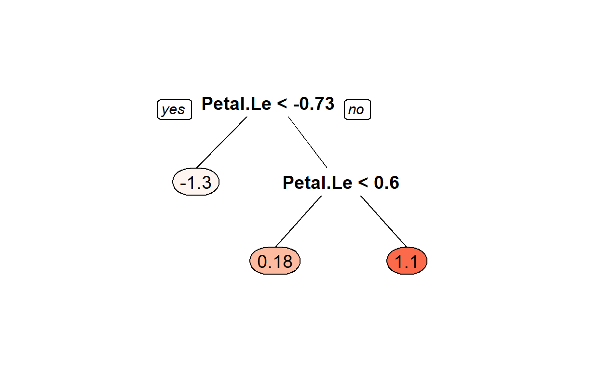

Introducing Machine Learning
Machine learning algorithms can be classified by the method in which they are constructed. Supervised learning methods use training data to build a model, which is subsequently applied to additional data. On the other hand, unsupervised learning methods seek relationships among data points that can be leveraged to construct a model that is subsequently applied to the data of interest. In some cases, training data are used to validate the effectiveness of an unsupervised method, or perhaps to provide some level of supervision, which is known as semi-supervised learning.
More recently, additional types of learning have been developed. First, transfer learning extends a model trained on a previous data set to new, related data. This can be viewed as learning by analogy, which is similar to how humans learn. Second, reinforcement learning is a technique that explores how agents should behave within an environment by maximizing a cumulative reward. Finally, deep learning applies artificial neural networks that have multiple hidden layers to complex tasks, often with spectacular success in areas from image recognition to natural language processing.
Broadly speaking, the application of a machine learning algorithm will be one of four different categories:
Classification: generates a model that predicts discrete categories for new, unseen data.
Regression: generates a model that predicts continuous values for new, unseen data.
Dimensionality reduction: identifies (and optionally ranks) the most important (potentially new) features (or dimensions) for a data set.
Clustering: identifies clusters of instances in an N-dimensional feature space.

One final point to clarify before proceeding with demonstrations of these different algorithm categories. When applying a machine learning algorithm to a problem, we often need to specify both model parameters and model hyperparameters. While they are similar, the difference between these two types of information depends on whether the value can be estimated from the data.
- Parameter
A value that can be estimated from the data being analyzed and that is internal to the machine learning algorithm. A parameter is generally not specified by the programmer, and instead is determined automatically by the algorithm implementation (e.g., directly in the caret package). For example, the coefficients in a linear regression model are machine learning parameters.
- Hyperparameter
A value that cannot be estimated from the data being analyzed and that is external to a specific machine learning algorithm. A hyperparameter is generally specified by the programmer prior to the start of the learning process. As a result, the hyperparameter directly influences the performance of the algorithm and thus is a tunable parameter. For example, the number of neighbors in a k-nearest neighbors implementation is a hyperparameter.
Introducing Caret1
Caret stands for Classification And Regression Training. Apparently caret has little to do with our orange friend, the carrot. 🥕
Not only does caret allow you to run a plethora of ML methods, it also provides tools for auxiliary techniques such as:
Data preparation (imputation, centering/scaling data, removing correlated predictors, reducing skewness)
Data splitting
Variable selection
Model evaluation
An extensive vignette for caret can be found here: https://topepo.github.io/caret/index.html
Data Pre-Processing
Before we can apply a machine learning algorithm to the data of interest, we must divide the data into training and testing data sets. The training data are used to generate the supervised model, while the testing data are used to quantify the quality of the generated model. The function createDataPartition can be used to create balanced splits of the data. If the y argument to this function is a factor, the random sampling occurs within each class and should preserve the overall class distribution of the data. For example, to create a single 60/40% split of the iris data:
#lets split the data 60/40
library(caret)
trainIndex <- createDataPartition(iris$Species, p = .6, list = FALSE, times = 1)
#look at the first few
head(trainIndex)
Resample1
[1,] 1
[2,] 3
[3,] 4
[4,] 5
[5,] 7
[6,] 8#grab the data
irisTrain <- iris[ trainIndex,]
irisTest <- iris[-trainIndex,]
Data Scaling
Many machine learning estimators are sensitive to variations in the spread of features within a data set. For example, if all features but one span similar ranges (e.g., zero through one) and one feature spans a much larger range (e.g., zero through one hundred), an algorithm might focus on the one feature with a larger spread, even if this produces a sub-optimal result. To prevent this, we generally scale the features to improve the performance of a given estimator.
Data scaling can take several forms:
Standardization: the data are scaled to have zero mean and unit (i.e., one) variance.
Normalization: the data are scaled to have unit mean and variance.
Range: the data are scaled to span a defined range, such as \(0,1\).
Binarization: the data are thresholded such that values below the threshold are zero (or False), and above the threshold are one (or True).
One important caveat to scaling is that any scaling technique should be trained via the fit method on the training data used for the machine learning algorithm. Once trained, the scaling technique can be applied equally to the training and testing data. In this manner, the testing data will always match the space spanned by the training data, which is what is used to generate the predictive model.
We demonstrate this approach in the following code cell, where we compute a standardization from our training data. This transformation is applied to both the training and testing data.
preProcValues <- preProcess(irisTrain, method = c("center", "scale"))
trainTransformed <- predict(preProcValues, irisTrain)
testTransformed <- predict(preProcValues, irisTest)
I made a mistake here…Can you spot it 👀
preProcValues <- preProcess(irisTest, method = c("center", "scale"))
testTransformed <- predict(preProcValues, irisTest)
psych::describe(trainTransformed)
vars n mean sd median trimmed mad min max range
Sepal.Length 1 90 0 1.00 -0.06 -0.03 1.07 -1.85 2.46 4.31
Sepal.Width 2 90 0 1.00 -0.17 -0.01 1.07 -2.58 2.73 5.31
Petal.Length 3 90 0 1.00 0.34 0.00 0.98 -1.53 1.80 3.32
Petal.Width 4 90 0 1.00 0.11 -0.02 1.32 -1.42 1.64 3.05
Species* 5 90 2 0.82 2.00 2.00 1.48 1.00 3.00 2.00
skew kurtosis se
Sepal.Length 0.22 -0.61 0.11
Sepal.Width 0.15 0.06 0.11
Petal.Length -0.32 -1.43 0.11
Petal.Width -0.11 -1.37 0.11
Species* 0.00 -1.53 0.09psych::describe(testTransformed)
vars n mean sd median trimmed mad min max range
Sepal.Length 1 60 0 1.00 -0.05 -0.06 1.26 -1.62 2.26 3.88
Sepal.Width 2 60 0 1.00 -0.08 -0.05 0.79 -1.78 2.90 4.68
Petal.Length 3 60 0 1.00 0.30 0.00 1.06 -1.52 1.63 3.15
Petal.Width 4 60 0 1.00 0.17 -0.02 1.32 -1.47 1.54 3.01
Species* 5 60 2 0.82 2.00 2.00 1.48 1.00 3.00 2.00
skew kurtosis se
Sepal.Length 0.44 -0.68 0.13
Sepal.Width 0.49 0.10 0.13
Petal.Length -0.19 -1.45 0.13
Petal.Width -0.10 -1.42 0.13
Species* 0.00 -1.55 0.11With our data properly divided into training and testing samples, and the features appropriately scaled, we now change to the application of machine learning algorithms
Classification
The first type of algorithm we will demonstrate is classification, where we train an estimator to generate a model for the prediction of discrete labels. The following code cell completes this task by performing k-Nearest Neighbors classification. In this example, we use five nearest neighbors (but this value can be easily adjusted to see how the classification performance changes). As demonstrated in this code example, the standard classification process in caret is to first fit a model to the training data and to subsequently apply this model to predict values for the testing data. We can compute an accuracy measurement for our trained algorithm to compare the predicted and known labels for the testing data.
Since we set the k there is no reason to actually train… 😖
#fit knn
knn_fit<-train(Species~.,
data=trainTransformed,
method="knn",
tuneGrid=data.frame(k=5))
knn_fit
k-Nearest Neighbors
90 samples
4 predictor
3 classes: 'setosa', 'versicolor', 'virginica'
No pre-processing
Resampling: Bootstrapped (25 reps)
Summary of sample sizes: 90, 90, 90, 90, 90, 90, ...
Resampling results:
Accuracy Kappa
0.9271848 0.8892137
Tuning parameter 'k' was held constant at a value of 5#predict on the test set
knn_pred<-predict(knn_fit,testTransformed)
#confusion
confusionMatrix(knn_pred,testTransformed$Species)
Confusion Matrix and Statistics
Reference
Prediction setosa versicolor virginica
setosa 20 0 0
versicolor 0 19 1
virginica 0 1 19
Overall Statistics
Accuracy : 0.9667
95% CI : (0.8847, 0.9959)
No Information Rate : 0.3333
P-Value [Acc > NIR] : < 2.2e-16
Kappa : 0.95
Mcnemar's Test P-Value : NA
Statistics by Class:
Class: setosa Class: versicolor Class: virginica
Sensitivity 1.0000 0.9500 0.9500
Specificity 1.0000 0.9750 0.9750
Pos Pred Value 1.0000 0.9500 0.9500
Neg Pred Value 1.0000 0.9750 0.9750
Prevalence 0.3333 0.3333 0.3333
Detection Rate 0.3333 0.3167 0.3167
Detection Prevalence 0.3333 0.3333 0.3333
Balanced Accuracy 1.0000 0.9625 0.9625Regression
The second machine learning application we will demonstrate is regression. To demonstrate regression, we will introduce the Decision Tree. A decision tree simply asks a set of questions of the data, and based on the answers, constructs a model representation. The tree (or model) is constructed by recursively splitting a data set into new groupings based on a statistical measure of the data along each different dimension (popular measures include the Gini coefficient or the entropy).
The terminal nodes in the tree are known as leaf nodes, and they provide the final predictions. In the simplest form, the leaf node simply provides the final prediction. More realistic decision trees generate a model prediction by using all instances in the leaf node, for example by averaging across them.
Before generating a regression model, however, we must pre-process our data to identify our independent variables (or features) and our dependent variable (or feature). Given a set of new independent variables, a regression model will predict the dependent variable. In the following code cell, we first select the first three features to be our independent variables and the fourth variable to be our dependent variable. We divide these into training and testing samples.
#fit Decision Tree
DT_fit1<-train(Petal.Width~Sepal.Length+Sepal.Width+Petal.Length,
data=trainTransformed,
method="rpart")
DT_fit1
CART
90 samples
3 predictor
No pre-processing
Resampling: Bootstrapped (25 reps)
Summary of sample sizes: 90, 90, 90, 90, 90, 90, ...
Resampling results across tuning parameters:
cp RMSE Rsquared MAE
0.01358968 0.2912198 0.9192337 0.2190053
0.14072451 0.4036414 0.8405401 0.3131695
0.79305182 0.8043429 0.7774058 0.6777393
RMSE was used to select the optimal model using the smallest value.
The final value used for the model was cp = 0.01358968.Install another package
install.packages("rpart.plot")
We can plot simple trees
rpart.plot::prp(DT_fit1$finalModel,box.palette = "Reds", tweak = 1.2)

Lets predict
#predict on the test set
DTfit1_pred<-predict(DT_fit1,testTransformed)
Rsquared 😈
preds<-DTfit1_pred
actual<-testTransformed$Petal.Width
#one formulation
rss <- sum((preds - actual) ^ 2) ## residual sum of squares
tss <- sum((actual - mean(actual)) ^ 2) ## total sum of squares
rsq <- 1 - rss/tss
rsq
[1] 0.8915503[1] 0.9597373#another
cor(preds,actual)^2
[1] 0.8929912Exercise 1
Using the code above, answer the following questions.
- Change the p=.6 to p=.75 in the Data Pre-Processing section. How did the classification results change?
Answer
Explanation
For the first code chunk: Where do I start? Well, I know that I need to split the data differently. The question asks me to split the data where 75% of the original dataset is split into Training data and that would leave 25% left for Testing data. Why do we have Training data and Testing data? Running and evaluating the model on the training data is like me giving you a study guide to an exam and then giving you an exam that is exactly the study guide…not a great measure of your abilities.
For the second code chunk: K-NN is our classification algorithm. Because K-NN uses distance we need the variables to have the same unit of measure. You can’t subtract centimeters from inches without doing a conversion. Here we standardize the variables to make them have the same measure…which is standard deviations.
For the third code chunk: Run the model. We have done the prep work, we split the data into training and testing and we standardized the variables. Now we run the model on the training data.
For the fourth code chunk: Get the results. First we have to use the model to predict on the testing dataset. Basically for K-NN this means for whatever our k tuning parameter is (5 in this example) is the number of neighbors we use to make our prediction. So, we have a row of data in the testing set and that generates a point in N-dimensional space (look at my 3d graphs for an example of a 3-dimensional space) and K-NN looks for the 5 nearest points from the training data and sets to prediction to majority vote…so if 3 of the points are setosa, then that prediction is set to setosa.
Code
First Code Chunk
library(tidyverse)
library(caret)
#change the p=.6 to p=.75
#what does createDataPartition do?
#run the following code: ?createDataPartition
#this creates an index of rows in include in the training
#literally lists the rows to keep
trainIndex <- createDataPartition(iris$Species, p = .75, list = FALSE, times = 1)
#rows to keep
knitr::kable(trainIndex)%>%
kableExtra::kable_styling("striped")%>%
kableExtra::scroll_box(width = "100%",height="200px")
| Resample1 |
|---|
| 1 |
| 2 |
| 3 |
| 4 |
| 8 |
| 12 |
| 13 |
| 15 |
| 16 |
| 17 |
| 18 |
| 21 |
| 22 |
| 23 |
| 24 |
| 26 |
| 27 |
| 28 |
| 29 |
| 30 |
| 31 |
| 32 |
| 33 |
| 34 |
| 35 |
| 36 |
| 37 |
| 38 |
| 39 |
| 40 |
| 42 |
| 43 |
| 45 |
| 46 |
| 47 |
| 48 |
| 49 |
| 50 |
| 51 |
| 52 |
| 54 |
| 56 |
| 57 |
| 58 |
| 59 |
| 62 |
| 63 |
| 64 |
| 65 |
| 66 |
| 67 |
| 68 |
| 69 |
| 70 |
| 71 |
| 72 |
| 73 |
| 75 |
| 76 |
| 77 |
| 78 |
| 79 |
| 80 |
| 81 |
| 83 |
| 84 |
| 85 |
| 87 |
| 89 |
| 90 |
| 93 |
| 94 |
| 96 |
| 97 |
| 99 |
| 100 |
| 101 |
| 103 |
| 105 |
| 106 |
| 107 |
| 108 |
| 109 |
| 110 |
| 111 |
| 112 |
| 113 |
| 115 |
| 116 |
| 117 |
| 118 |
| 120 |
| 121 |
| 122 |
| 123 |
| 127 |
| 128 |
| 130 |
| 132 |
| 134 |
| 135 |
| 136 |
| 137 |
| 138 |
| 139 |
| 141 |
| 142 |
| 143 |
| 144 |
| 145 |
| 147 |
| 148 |
| 149 |
| 150 |
#grab the data
#take these rows
irisTrain <- iris[ trainIndex,]
#don't take these rows
irisTest <- iris[-trainIndex,]
#we now have training and testing data sets
Second Code Chunk
#for the algorithm we are using it requires that we standardize
#center= subtract the means and
#scale = divide by standard deviation
#?preProcess sets the conversion up
preProcValues <- preProcess(irisTrain, method = c("center", "scale"))
preProcValues
Created from 114 samples and 5 variables
Pre-processing:
- centered (4)
- ignored (1)
- scaled (4)#this predict actual change the variables
trainTransformed <- predict(preProcValues, irisTrain)
#repeat for testing
preProcValues <- preProcess(irisTest, method = c("center", "scale"))
testTransformed <- predict(preProcValues, irisTest)
Third Code Chunk
#data is split and standardized
#time to run the model
#fit knn
#use train function and set up the equation
knn_fit<-train(Species~Sepal.Length+Sepal.Width+Petal.Length+Petal.Width,
#data we are using
data=trainTransformed,
#algorithm we are using
method="knn",
#the hyperparameter or tuning parameter is the
#number of neighbors...here we set it to 5
tuneGrid=data.frame(k=5))
#this is the object that holds the model
knn_fit
k-Nearest Neighbors
114 samples
4 predictor
3 classes: 'setosa', 'versicolor', 'virginica'
No pre-processing
Resampling: Bootstrapped (25 reps)
Summary of sample sizes: 114, 114, 114, 114, 114, 114, ...
Resampling results:
Accuracy Kappa
0.9224274 0.8822742
Tuning parameter 'k' was held constant at a value of 5Fourth Code Chunk
#predict on the test set
knn_pred<-predict(knn_fit,testTransformed)
#confusion matrix gives us the results
confusionMatrix(knn_pred,testTransformed$Species)
Confusion Matrix and Statistics
Reference
Prediction setosa versicolor virginica
setosa 12 0 0
versicolor 0 12 0
virginica 0 0 12
Overall Statistics
Accuracy : 1
95% CI : (0.9026, 1)
No Information Rate : 0.3333
P-Value [Acc > NIR] : < 2.2e-16
Kappa : 1
Mcnemar's Test P-Value : NA
Statistics by Class:
Class: setosa Class: versicolor Class: virginica
Sensitivity 1.0000 1.0000 1.0000
Specificity 1.0000 1.0000 1.0000
Pos Pred Value 1.0000 1.0000 1.0000
Neg Pred Value 1.0000 1.0000 1.0000
Prevalence 0.3333 0.3333 0.3333
Detection Rate 0.3333 0.3333 0.3333
Detection Prevalence 0.3333 0.3333 0.3333
Balanced Accuracy 1.0000 1.0000 1.0000Answer
We would have to do a test to know whether the models produced results that were statistically different. But for now we can compare the accuracy and kappa. Comparing the results below to what is in the module we see that the model performs worse. Both the accuracy and the kappa are lower than the model in the module.
#The result was always the goal
confusionMatrix(knn_pred,testTransformed$Species)
Confusion Matrix and Statistics
Reference
Prediction setosa versicolor virginica
setosa 12 0 0
versicolor 0 12 0
virginica 0 0 12
Overall Statistics
Accuracy : 1
95% CI : (0.9026, 1)
No Information Rate : 0.3333
P-Value [Acc > NIR] : < 2.2e-16
Kappa : 1
Mcnemar's Test P-Value : NA
Statistics by Class:
Class: setosa Class: versicolor Class: virginica
Sensitivity 1.0000 1.0000 1.0000
Specificity 1.0000 1.0000 1.0000
Pos Pred Value 1.0000 1.0000 1.0000
Neg Pred Value 1.0000 1.0000 1.0000
Prevalence 0.3333 0.3333 0.3333
Detection Rate 0.3333 0.3333 0.3333
Detection Prevalence 0.3333 0.3333 0.3333
Balanced Accuracy 1.0000 1.0000 1.0000Change the p=.6 to p=.4 in the Data Pre-Processing section. How did the classification results change?
Change the
khyper-parameter in the k-nn estimator to three (and ten). In other words change the 5 to 10 intuneGrid=data.frame(k=5)in the Classification section. How did the classification results change?Change the p=.6 to p=.75 in the Data Pre-Processing section. How did the regression results change?
Model Persistence
As the previous code cells demonstrate, we can generate machine learning models rather easily for small data sets by using the caret library. For larger data sets, however, either in the number of instances, the number of features, or both, building a quality machine learning model can take considerable time and effort. As a result, we may wish to persist a trained machine learning model so that it can be applied to new data at a later time.
#load our model
load(file = "DT_fit1.Rda")
Whenever you load it back you can use it just like before.
Content for this caret portion is borrowed from https://www.rebeccabarter.com/blog/2017-11-17-caret_tutorial/↩︎